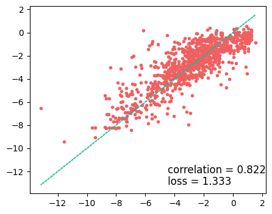

LIME paper: Random Forest for Solubility Prediciton
Import packages
import pandas as pd
import matplotlib.pyplot as plt
# import seaborn as sns
import matplotlib as mpl
import rdkit, rdkit.Chem, rdkit.Chem.Draw
from rdkit.Chem.Draw import IPythonConsole
import numpy as np
import mordred, mordred.descriptors
from mordred import HydrogenBond, Polarizability
from mordred import SLogP, AcidBase, Aromatic, BondCount, AtomCount
from mordred import Calculator
import exmol as exmol
from rdkit.Chem.Draw import rdDepictor
import os
from sklearn.ensemble import RandomForestRegressor
from sklearn.model_selection import train_test_split
os.environ["CUDA_VISIBLE_DEVICES"] = "0"
rdDepictor.SetPreferCoordGen(True)
IPythonConsole.ipython_useSVG = True
color_cycle = ["#F06060", "#1BBC9B", "#F3B562", "#6e5687", "#5C4B51"]
mpl.rcParams["axes.prop_cycle"] = mpl.cycler(color=color_cycle)
np.random.seed(0)
soldata = pd.read_csv(
"https://github.com/whitead/dmol-book/raw/main/data/curated-solubility-dataset.csv"
)
#drop smile with containing 'P'
soldata = soldata[soldata["SMILES"].str.contains("P") == False]
features_start_at = list(soldata.columns).index("MolWt")
Build and train a Random Forest model
# make object that can compute descriptors
calc = Calculator()
calc.register([HydrogenBond.HBondDonor, HydrogenBond.HBondAcceptor])
calc.register(
[AcidBase.AcidicGroupCount, AcidBase.BasicGroupCount, Aromatic.AromaticBondsCount]
)
calc.register([SLogP.SLogP, Polarizability.APol])
calc.register(
[
BondCount.BondCount(type="double"),
BondCount.BondCount(type="aromatic"),
AtomCount.AtomCount("Hetero"),
]
)
# make subsample from pandas df
molecules = [rdkit.Chem.MolFromSmiles(smi) for smi in soldata.SMILES]
raw_features = []
for e, c in zip(molecules, calc.map(molecules, quiet=True)):
raw_features.append([v for v in c.values()])
feature_names = np.array([d.description() for d in calc.descriptors])
raw_features = np.array(raw_features)
labels = soldata["Solubility"]
print(len(labels)==len(molecules))
True
def pick_features(raw_features):
fm = raw_features.mean()
fs = raw_features.std()
def feature_convert(f):
f -= fm
f /= fs
return f
features = feature_convert(raw_features)
# we have some nans in features, likely because std was 0
features = features.astype(float)
features_select = np.random.randint(
0, len(raw_features[0]), size=3
) # np.all(np.isfinite(features), axis=0)
features = features[:, features_select]
names = feature_names[features_select]
return features, names
features, names = pick_features(raw_features)
print(features.shape, names)
X_train, X_test, y_train, y_test = train_test_split(
features, labels, test_size=0.1, shuffle=True
)
clf = RandomForestRegressor(max_depth=10, random_state=0)
clf.fit(X_train, y_train)
predicted = clf.predict(X_test)
(9569, 3) ['Wildman-Crippen LogP' 'number of hydrogen bond donor'
'basic group count']
plt.figure(figsize=(5, 4))
plt.plot(y_test, predicted, ".")
plt.plot(y_test, y_test, linestyle=":")
plt.text(
max(y_test) - 6,
min(y_test) + 1,
f"correlation = {np.corrcoef(y_test, predicted)[0,1]:.3f}",
fontsize=12,
)
plt.text(
max(y_test) - 6,
min(y_test),
f"loss = {np.sqrt(np.mean((y_test - predicted)**2)):.3f}",
fontsize=12,
)
plt.savefig("RF-ROC.png")

Compute descriptor attributions
def model_eval(smiles):
molecules = [rdkit.Chem.MolFromSmiles(smi) for smi in smiles]
labels = clf.predict(np.nan_to_num(features))
return labels
labels = model_eval(soldata.SMILES)
smi = soldata.SMILES[150]
stoned_kwargs = {
"num_samples": 2000,
"alphabet": exmol.get_basic_alphabet(),
"max_mutations": 2,
}
space = exmol.sample_space(smi, model_eval, stoned_kwargs=stoned_kwargs, quiet=True)
def calc_feature_importance(descriptors, tstats):
from collections import OrderedDict
feature_importance = {a: b for a, b in zip(descriptors, tstats) if not np.isnan(b)}
feature_importance = dict(
sorted(feature_importance.items(), key=lambda item: abs(item[1]), reverse=True)
)
# Fitted space important features
return feature_importance
descriptor_type = "Classic"
exmol.lime_explain(space, descriptor_type=descriptor_type)
wls_attr = calc_feature_importance(
list(space[0].descriptors.descriptor_names), list(space[0].descriptors.tstats)
)
wls_attr
{'number of hydrogen bond acceptor': 1.4775475696952518,
'number of heteroatoms': -1.0134150119811955,
'Wildman-Crippen LogP': 0.9808548577875669,
'number of hydrogen bond donor': -0.6161917216797034,
'aromatic bonds count': -0.6093312712664206,
'number of rotatable bonds': -0.2620474639634041,
'ring count': 0.0354866944274913,
'atomic polarizability': 0.0298257473861139,
'basic group count': -0.026129316369596346,
'acidic group count': -0.01962442351126895}
Do we recover training features?
x = wls_attr.keys()
xaxis = np.arange(len(x))
x_colors = ["purple" if t in names else "black" for t in x]
rf_imp = {a: b for a, b in zip(names, clf.feature_importances_)}
rf_x = np.zeros(len(x))
rf_y = np.zeros(len(x))
for i, j in enumerate(x):
if j in rf_imp:
rf_x[i] = i
rf_y[i] = rf_imp[j]
width = [wls_attr[i] for i in x]
colors = ["#F06060" if i < 0 else "#1BBC9B" for i in width]
fig, ax = plt.subplots(figsize=(6, 5))
ax.barh(xaxis + 0.2, width, 0.75, label="WLS", color=colors)
plt.xticks(fontsize=12)
plt.xlabel("Feature t-statistics", fontsize=12)
plt.yticks(xaxis, x, fontsize=12)
[t.set_color(i) for (i, t) in zip(x_colors, ax.yaxis.get_ticklabels())]
plt.gca().invert_yaxis()
plt.title("Random Forest Regression", fontsize=12)
Text(0.5, 1.0, 'Random Forest Regression')